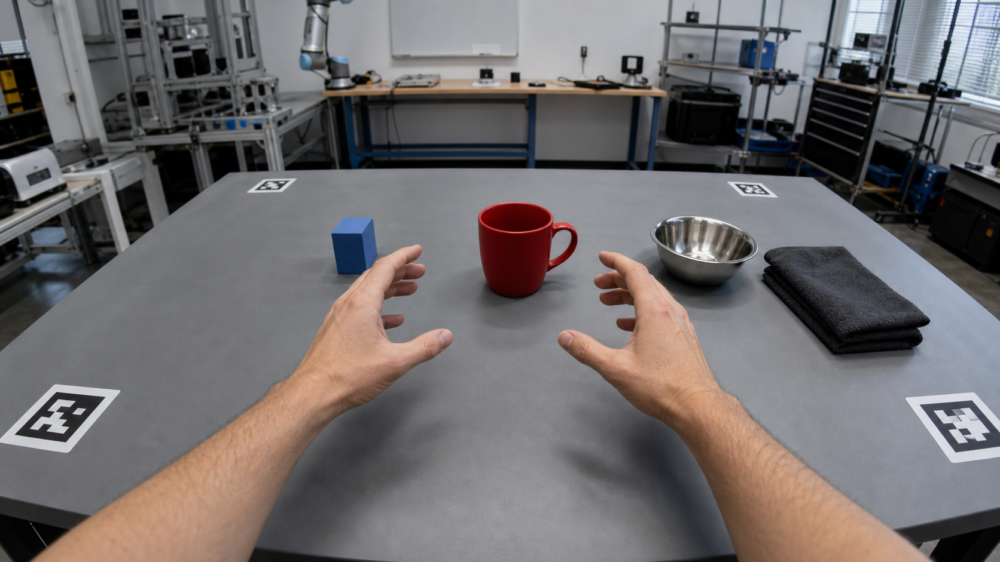

EGOCENTRIC // DATA COCKPIT
MULTIMODAL HUMAN MOTION ACQUISITION
P014 · GRASP / CUP / R03
OAK-4PONLINE
WRIST BAND248 HZ
WRITE86.4 MB/S
STORAGE428 GB
FPS30.0
SYNC+0.18 MS
HAND CONF98.4%
GESTUREPRE-GRASP
TARGET / MUG0.982
LEFT EMG 4 CH · 248 HZ
RIGHT EMG 4 CH · 248 HZ
CAM B / RGB
30 FPS
CAM C / MONO
SYNC
CAM D / DEPTH
ACTIVE